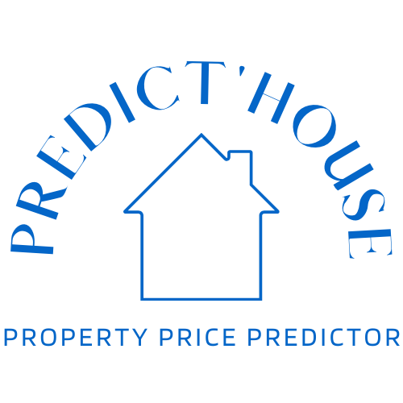

{% extends 'base.html' %}

{% block title %} Predict'House {% endblock %}
{% block content %}
    <div class="top">
        <h1 id="title" class="hidden">A Propos de Predict'house</h1>
    </div>
    <div class="formulaire animated fadeInUp">

        <fieldset class="fieldset-apropos">
            
            
            

            <label class="label-apropos">Valentine Sallet</label>
            <label class="label-apropos">Julien Kretz</label>
            <label class="label-apropos">Sabrine Thibert</label>
        </fieldset>

        <label class="descri">Nous sommes un groupe de 3 étudiants de quatrième année en école d'ingénieur à L'ESME Sudria. <br> Notre cursus est spécialisé dans le Big DATA et l'analyse de données.<br> <br> Après qu'une personne de notre entourage ai eu de nombreuses diffcicultées à estimer le juste prix de son logement.
            Nous avons eu l'idée de créer une application qui serait une aide à l'estimation de prix des appartements dans la ville de Paris. <br> Notre application a un réel intérêt dans la mesure où le marché de l’immobilier est saturé et que les prix ne cessent d’augmenter. <br> <br>Predict'House calcule le juste prix de votre logement à partir d'une analyse précise de machine learning en fonction des autres biens vendus similaires au votre.
            </label>

        
    </div>
{% endblock %}